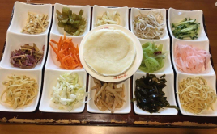
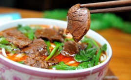
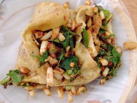

丝娃娃：丝娃娃，别名素春卷，是贵州省贵阳市的一种常见的地方传统小吃，只要在贵阳各地每一条街上，几乎都能看得见。而此菜素菜脆嫩，酸辣爽口，开胃健脾。猛一看颇似产房里初生的婴儿被裹在“襁褓”中。“襁褓”是用大米面粉烙成的薄饼，薄薄如纸却有—只手掌那么大。再卷入萝卜丝、折耳根（鱼香菜）、海带丝、炸黄豆、脆哨、糊辣椒等。又名素春卷。当地人吃时，当然少不了注入酸酸辣辣的汁液。这蘸水就是丝娃娃的精髓。
花溪牛肉粉：花溪牛肉粉发源地贵阳花溪地区，是贵州的一道特色名小吃，制作原料主要有牛肉、酸莲花白、芜荽等。由多种名贵中草药精心严格制作，做出的牛肉粉与众不同，汤鲜味美，肉香。吃过的人赞不绝口。
恋爱豆腐果：恋爱豆腐果简称豆腐果，是贵州省贵阳市的一种特色小吃，属于黔菜，其表面微黄，辣香嫩烫，开胃生津。先经碱水洗泡发酵，然后切成长方形小块，用无味的柏木锯面作燃料，烤至两面发黄，食用时用薄竹片将豆腐当腰剖开，添进由胡辣椒、生姜米、点葱、蒜泥、酱油、醋、味精等调制而成的佐料，趁热吃下，咸辣爽滑、满口喷香。